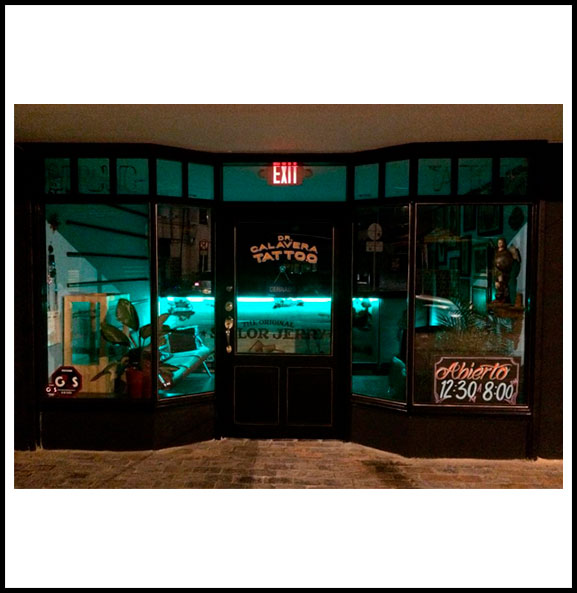
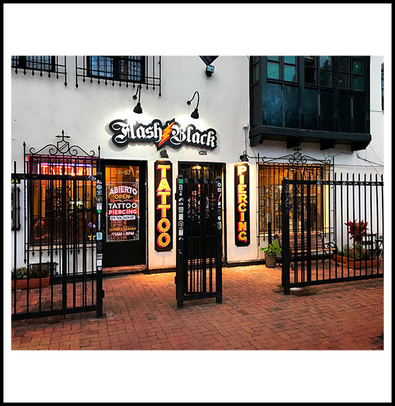
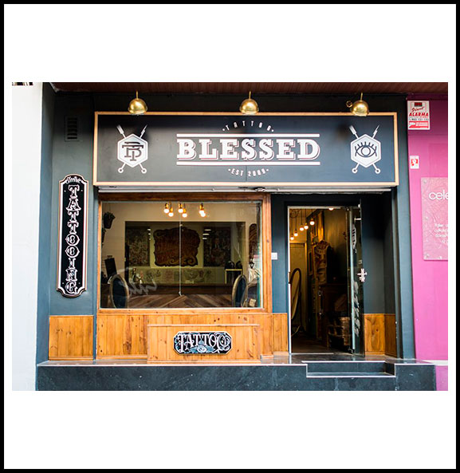

Tatuadores

Henry Anglas
Este tatuador nació en Junín Perú y conoció el arte del tattoo gracias a su hermano Franko Anglas.
En el 2005 empezó a tatuar de manera profesional asistiendo a diversos cursos de arte para mejorar
su conocimiento ilustrativo. Henry Anglas participó en varias convenciones y hoy día continúa haciéndolo.
Dirección: Evergreen Terrace 742, Puerto Madero, provincia de Buenos Aires.
Telefono: (54 9) 11 733-7795

Sus Trabajos


Javier J. Obregón
Es un tatuador argentino nacido en la provincia de Buenos Aires. Javier Obregón comenzó a incursionar en
el maravilloso mundo del tatuaje en el año 2000 y luego en el 2003 empezó a trabajar de manera profesional
en diversos estudios. A partir del año 2010, lo hizo en su estudio privado y durante el mismo año participó
de convenciones de tatuajes nacionales e internacionales.
Dirección: Wualnut 945, Belgrano, Buenos Aires.
Telefono: (54 9) 11 954-6635

Sus Trabajos


Mariano Antonio
Es uno de los mejores tatuadores, Mariano es un amante empedernido de los autos clásicos y del Rock & Roll
y hace ya más de 20 años que viene grabando en la piel de miles de personas los más lindos diseños.
Dirección: Spalding Way 430, Puerto Madero, Capital Federal.
Telefono: (54 9) 11 287-6137

Sus Trabajos